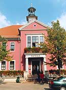
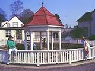
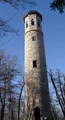
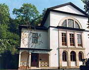
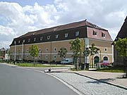
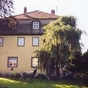
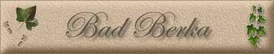

|
|
|
 Rathaus von Bad Berka
 Goethebrunnen
 Paulinenturm
 Coudrayhaus
 Zeughaus
 Edelhof
|

Im Herzen Thüringens liegt die kleine Kurstadt Bad Berka, umgeben von dem 150 km² großen Landschaftsschutzgebiet „Mittleres Ilmtal“. Die ausgedehnten Fichten- und Buchenwälder sowie das Vorkommen heilsamer Wasser animierten schon unsere Vorfahren 1813 zum Aufbau einer Kurbadeanstalt. Und sie sind bis heute wichtige Gründe, Bad Berka zu besuchen, hier zu leben, zu arbeiten oder aber als Kurgast, Patient oder Tourist zu verweilen. Die Stadt, der Park und eine herrliche Umgebung laden zum Wandern und Erholen ein. Ausstellungen, Konzerte und fröhliche Feste bieten vielfältige kulturelle Abwechslungen, Waldbad, Kegelbahn, Sport- und Spielplätze, Ilmradweg, Segelflug oder Aussichtsturm ein breites Feld an sportlichen Betätigungsmöglichkeiten. Ein großes Plus ist die zentrale Lage Bad Berkas – nur 12 km von Weimar und 20 km von Thüringens Landeshauptstadt Erfurt entfernt. Der Name Bercha - Berchaha - Birka bedeutet "Ort der Birken am Wasser" oder "am Birkenwasser" 1119 erstmalige Erwähnung des Ortes als „Bercha“ in einer Schenkungsurkunde an die Marienkirche zu Erfurt um 1240 Graf Dietrich III. von Berka stiftete ein Zisterzienser-Nonnen-Kloster 1414 erste Bezeichnung als Stadt 1604-1608 Nach mehreren Herrscherwechseln in den vorangegangenen Jahrhunderten ging die ehemalige Grafschaft Berka in den Besitz der Herzöge von Weimar über. 1608 großer Stadtbrand, bei dem neben 44 Häusern auch Kirche, Schule und Rathaus ein Raub der Flammen wurde 1613 bei „Thüringer Sintflut“ versanken 23 Berkaer Häuser in den Wasserfluten 1727 – 1731 Wiederaufbau des Kirchturmes 119 Jahre nach dem großen Stadtbrand und 1739 - 1741 Bau des barocken Kirchenschiffes 1739 Übergabe des herzoglichen Jagdzeughauses zur Unterbringung der Wagen, Kutschen und Gerätschaften für die großen Jagden der Weimarer Herzöge 1813 Nach der Entdeckung eisen- und schwefelhaltiger Heilwasser im Bereich des heutigen Kurparks veranlasste Herzog Carl August von Sachsen-Weimar den Bau eines Schwefelbades in Berka. Johann Wolfgang von Goethe stand dem Unternehmen beratend und unterstützend zur Seite. 1816 Größter Stadtbrand in der Geschichte Berkas - 90 Häuser mit Nebengebäuden, Rathaus und Mädchenschule fielen in Schutt und Asche. 1825 Auf Anregung Goethes hatte Weimars Oberlandbaumeister Clemens Wenceslaus Coudray ein Badegesellschaftshaus für die junge Badeanstalt projektiert. Das heutige Coudray-Haus am Rande des Kurparks wurde am 24. Juni 1825 im Beisein des gesamten Weimarer Hofes feierlich eingeweiht. 1884 Eröffnung des Paulinenturms als Aussichtsturm auf dem 416 m hoch gelegenen Adelsberg. 143 Stufen führen zur Plattform des 26 m hohen Turms aus Kalkstein. 1887 Eröffnung der Eisenbahnstrecke Weimar - Berka - Blankenhain mit Abzweig zunächst bis Tannroda 1888 Badearzt Dr. Willrich behandelte die ersten Lungenkranken in sog. Waldschlafstätten in dem großen Waldgebiet auf der Harth. 1898 Eröffnung der ersten Lungenheilanstalt, der Sophienheilstätte, auf dem Emskopf bei München. 1911 Berka darf sich offiziell „Bad Berka“ nennen. Vorangegangen war eine deutliche Verbesserung der für einen Kurort wichtigen Infrastruktur 1951 – 1957 Bau der Zentralklinik auf der Harth, zunächst zur Behandlung von Tuberkulosepatienten, in den 60er Jahren Profilierung auf dem Gebiet der Herzchirurgie ab 1991 Ausbau der Zentralklinik unter privater Trägerschaft zu einer hochmodernen intensivmedizinischen Einrichtung mit verschiedenen Spezialrichtungen 1994/1997 Eröffnung der neuen MEDIAN-Kliniken I und II am Adelsberg 2002 Verleihung des Prädikates Staatlich anerkannter Ort mit Heilquellenkur
|